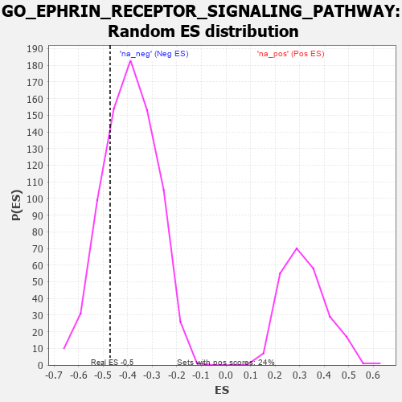

| | | Dataset | 7d |
| Phenotype | NoPhenotypeAvailable |
| Upregulated in class | na_neg |
| GeneSet | GO_EPHRIN_RECEPTOR_SIGNALING_PATHWAY |
| Enrichment Score (ES) | -0.47147423 |
| Normalized Enrichment Score (NES) | -1.200254 |
| Nominal p-value | 0.24146982 |
| FDR q-value | 0.63628465 |
| FWER p-Value | 1.0 |
Table: GSEA Results Summary
 Fig 1: Enrichment plot: GO_EPHRIN_RECEPTOR_SIGNALING_PATHWAY
Fig 1: Enrichment plot: GO_EPHRIN_RECEPTOR_SIGNALING_PATHWAY
Profile of the Running ES Score & Positions of GeneSet Members on the Rank Ordered List
| PROBE | GENE SYMBOL | GENE_TITLE | RANK IN GENE LIST | RANK METRIC SCORE | RUNNING ES | CORE ENRICHMENT | | 1 | SRC | | | 1128 | 0.459 | -0.1054 | No |
| 2 | NCK2 | | | 1131 | 0.458 | -0.0691 | No |
| 3 | AP2S1 | | | 1846 | 0.329 | -0.1327 | No |
| 4 | PAK3 | | | 1889 | 0.322 | -0.1124 | No |
| 5 | VAV3 | | | 2614 | 0.210 | -0.1867 | No |
| 6 | AP2A2 | | | 3433 | 0.085 | -0.2828 | No |
| 7 | CRK | | | 4139 | -0.031 | -0.3690 | No |
| 8 | AP2B1 | | | 4185 | -0.039 | -0.3716 | No |
| 9 | ARPC2 | | | 4232 | -0.047 | -0.3736 | No |
| 10 | ARPC3 | | | 4659 | -0.129 | -0.4169 | No |
| 11 | ITSN1 | | | 5094 | -0.222 | -0.4538 | Yes |
| 12 | MMP9 | | | 5108 | -0.227 | -0.4373 | Yes |
| 13 | EPHA4 | | | 5273 | -0.265 | -0.4368 | Yes |
| 14 | EPHA1 | | | 5349 | -0.285 | -0.4235 | Yes |
| 15 | GRIN1 | | | 5381 | -0.291 | -0.4042 | Yes |
| 16 | ARPC4 | | | 5886 | -0.430 | -0.4333 | Yes |
| 17 | RAC1 | | | 6036 | -0.484 | -0.4134 | Yes |
| 18 | ROCK1 | | | 6152 | -0.520 | -0.3865 | Yes |
| 19 | CDC42 | | | 6236 | -0.548 | -0.3532 | Yes |
| 20 | PAK1 | | | 6691 | -0.757 | -0.3500 | Yes |
| 21 | NGEF | | | 7335 | -1.209 | -0.3345 | Yes |
| 22 | MMP2 | | | 7875 | -2.574 | -0.1971 | Yes |
| 23 | FYN | | | 7881 | -2.622 | 0.0113 | Yes |
Table: GSEA details [plain text format]

Fig 2: GO_EPHRIN_RECEPTOR_SIGNALING_PATHWAY: Random ES distribution
Gene set null distribution of ES for GO_EPHRIN_RECEPTOR_SIGNALING_PATHWAY